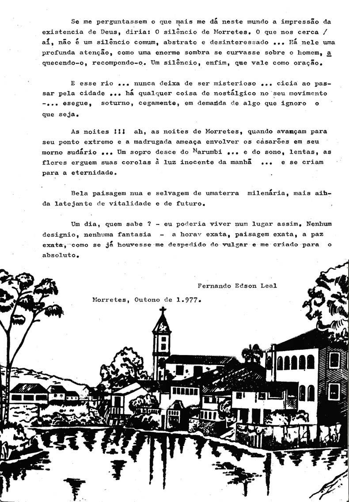
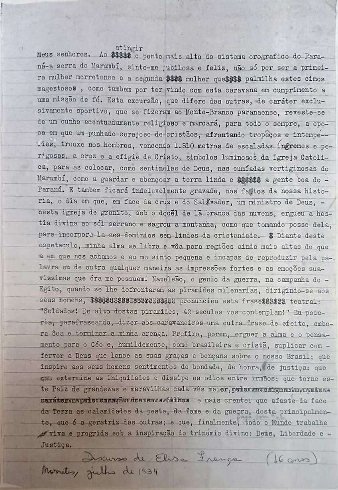
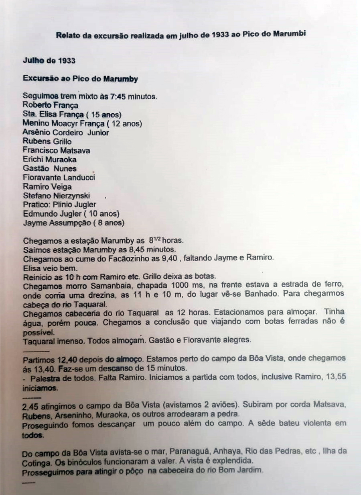
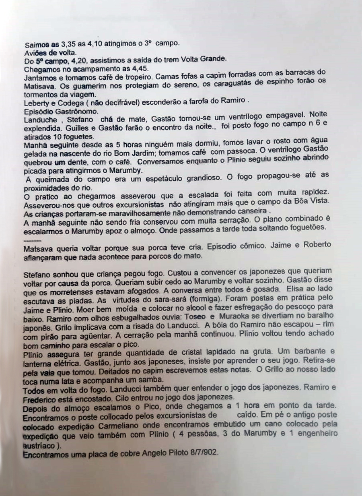
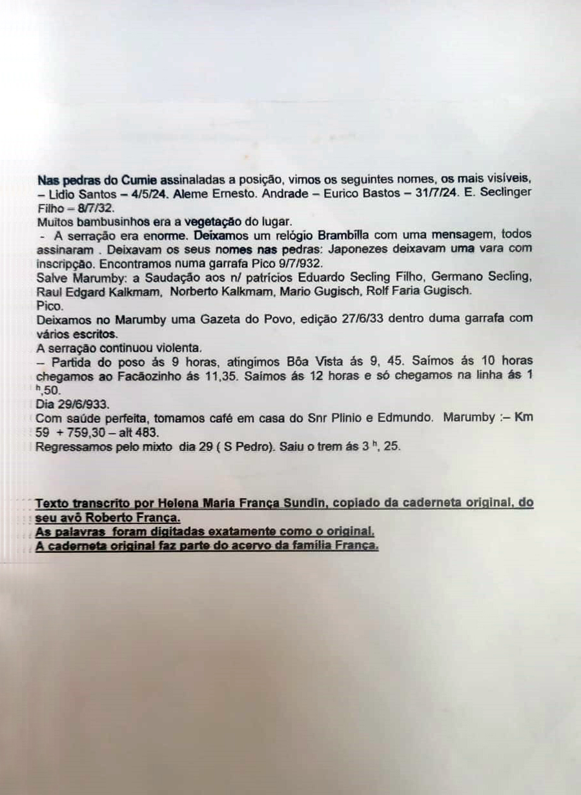

Assine.
PDF do Projeto.


POEMA

Discurso e Relato sobre a Escalada do Conjunto Marumbi




"Escola Consolidada Professora Desauda Bosco da Costa Pinto"
JUSTIFICATIVA AO ANTEPROJETO DE LEI Nº 798/83
Senhor Presidente,
Senhores Vereadores:
Desauda Bosco da Costa Pinto, nasceu na Praia Grande, em Florianópolis, Santa Catarina, em 07 de março de 1919.
A filha de Henrique Bosco e Semiramis Bosco, desde a mais tenra infância, demonstrava aptidão para o magistério, carreira que abraçou com muito amor e dedicação. fazendo nela o seu sacerdócio. Casada com o morretense Marte Brambilla da Costa Pinto de cuja união nasceram duas filhas: Maria Teresa e Yana Yara.
Em 04 de março de 1950, a professora Desauda foi transferida para Morretes e aqui chegando, logo foi demonstrando a sua imensurável capacidade de trabalho, dedicação e amos às crianças, às causas do ensino e, sobretudo, às artes. Sua primeira turma, no então "Grupo Escolar Miguel Schleder", foi o jardim de Infância, onde revelando os seus pendores artísticos na pintura, decorou toda a sala de aula, com painéis maravilhosos, incentivando as crianças à criatividade, não só nas artes plásticas como também nas artes dramáticas.
Formada em Geografia, logo foi convidada pelo então Ginásio Municipal Rocha Pombo, para ministrar aulas, sendo uma das primeiras mestras. Possuidora de um vasto cabedal de conhecimentos, a todos surpreendia pela sua inteligência e abnegação ao ensino. Espírito irrequieto, alegre e empreendedor, logo angariou a amizade de todos.
Foi a fundadora do teatro estudantil em Morretes, e autora de várias peças inesquecíveis. Incentivou a juventude desta terra, criando um verdadeiro elenco teatral, oportunizando apresentações maravilhosas, não só aqui, como também em outros municípios.
Foi também a fundadora da Fanfarra Escolar, a cujo mister se dedicou de corpo e alma, encetando campanhas para a aquisição de instrumentos (teatros, gincanas, shows, livro de ouro e outros), envolvendo toda a comunidade. O brilho e o garbo da Fanfarra da Profª Desauda, foi reconhecido quando de suas apresentações, dentro e fora deste município.
Foi a abnegada lutadora pela criação de uma Escola Normal em Morretes não medindo esforços na busca de sua concretização, e, a 1º de maio de 1956, é criada em Morretes, a "Escola Normal Colegial Silveira Neto de Morretes, sendo a Profª Desauda a sua fundadora e mantenedora.
Na Escola Normal criou a Escolinha de Artes, na qual muitos alunos se revelaram, dando vazão à criatividade nata.
Dotada de um espírito caridoso e humanitário, criou aqui várias Campanhas Filantrópicas (do agasalho, da cadeira de rodas, da alimentação), transmitindo aos seus alunos a mais bela e humanitária lição de AMOR AO PRÓXIMO.
Nas datas históricas nacionais e municipais era a organizadora dos desfiles escolares, cuja beleza, criatividade e cultura, transpareciam nos carros alegóricos, relembrando os feitos dos filhos notáveis, as belezas e as tradições de nossa terra.
E, aos filhos desta Morretes, a quem ela tanto amou, cabe, neste momento, prestar-lhe uma justa homenagem, dando o seu honrado nome à nova Escola Consolidada, deste Município: "Escola Consolidada Professora Desauda Bosco da Costa Pinto".
Morretes, 08 de junho de 1983.
Vereador Mauro Gilberto dos Santos
GRUPO DE TEATRO “SILVEIRA NETTO
Ás vezes bastam apenas duas pessoas afeiçoadas á arte teatral para fazer florescer idêntica afeição em um número incontável de outras. Foi o que aconteceu na vizinha cidade de Morretes, onde o Dr. Francisco de Almeida Neto e a Professora Desauda Bosco da Costa Pinto conseguiram interessar as pessoas de suas relações nos problemas da ribalta e, assim, organizar um conjunto amador apreciável que recebeu o nome de Grupo Teatral “Silveira Netto”, numa homenagem ao Poeta Morretense. Hoje toda Morretes acompanha com desvelo as atividades do novel conjunto.
Fundado em setembro de 1954, logo após estreava o Grupo com a comédia “O Amor Está Sempre na Moda”, de autoria da própria Senhora Desauda. Com a peça, visitaram os amadores Morretenses esta Capital, exibindo-se no Auditório do Instituto de Educação e receberam referências ótimas da crítica.
Posteriormente apresentaram-se também com sucesso ao público de Antonina.
No momento o Grupo ensaia nova comédia, também der autoria da Professora Desauda e que tem por título “O Sacy”, reunindo em seu elenco, entre outros, os seguintes elementos da sociedade de Morretes: Nelly Angulski, Trindade Martinho Alpendre, Francisco de Almeida Neto, Arnaldo José Malucelli e Sidney Antunes de Oliveira. A Direção é da própria autora da peça, tendo como assistente o Dr. Francisco.
Graças a tais pioneiros, é que se desenvolve o gosto pelo teatro, mesmo nas menores localidades, levando a todos o contato com a mais humana das artes. “G.S.B.”
(Jornal “Diário do Paraná”, 12 de abril de 1955, Página 4, Coluna “Espelho da Ribalta”.)
(Colaboração de Eric Joubert Hunzicker) |